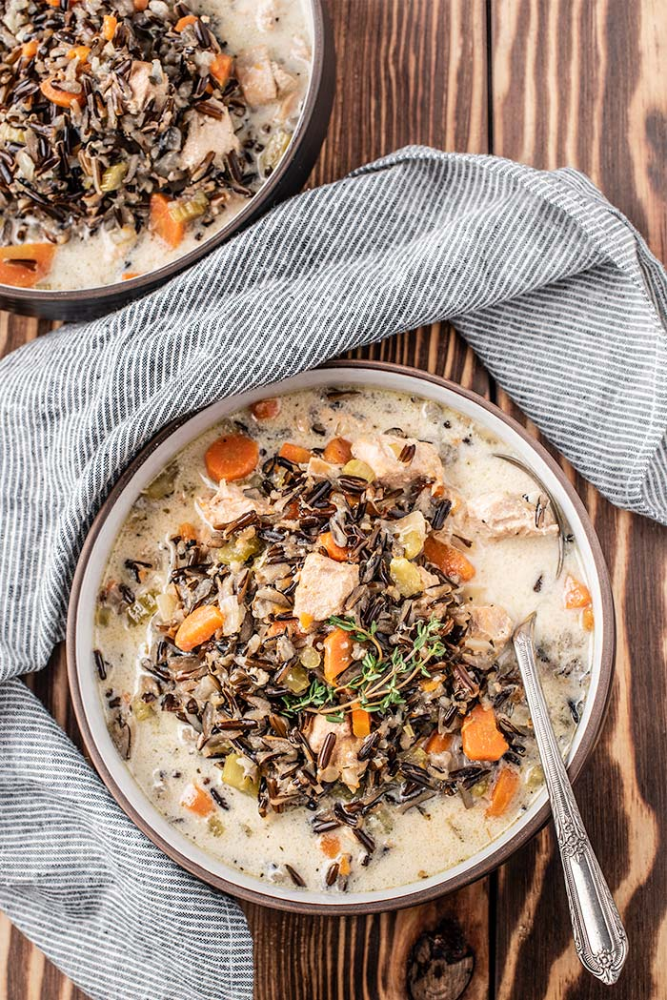

Chicken Wild Rice Soup

Description
This chicken wild rice soup is delicious and easy to make using an instant pot.
Ingredients
- 2 cloves garlic minced
- 1 onion small, chopped
- 1 tbsp coconut oil
- 3 cups broth
- 1 lb chicken thigh meat, cubed
- 4 carrots, chopped
- 3 stalks of celery, chopped
- 1 tsp salt
- 1/4 tsp pepper
- 1 tsp italian seasoning
- 1/2 tbsp fresh thyme leaves
- 1 cup wild rice
- 15 ounces coconut milk
Steps
- Press saute button and add coconut oil.
- Add in onion and saute for 3-4 minutes.
- Pour in broth and scrape bottom of the pan to remove any onion or garlic that may be stuck to the bottom.
- Add all other ingredients except for coconut milk.
- Close the lid, seal the vent, and press manual or pressure cook button and toggle to 35 minutes.
- After pressure cycle is complete, let natural release for 15 minutes, then release pressure.
- Stir in coconut milk and serve.